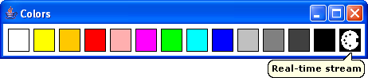

Basic objects like notes and rest have their usual attributes like pitch, velocity, duration, channel and an additional one: their color. The right box (MIDI port) contains the real-time stream.
Color are use to distinguish several notes which have the same attributes during the abstraction process. When you abstract (using the Lambda constructor) a note with a color into an musical object which contains notes with different colors, only the notes with the same color will be considered during the abstraction process.
To change the current color used in the Chord constructor, just drag the new desired color square on the Chord constructor window.